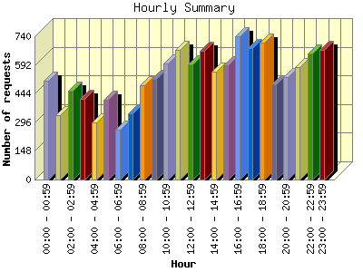
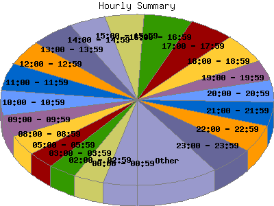

Report generated by Analog 6.0 and Report Magic 2.21
|
Web Server Statistics for "Harish Narayanan (hnarayan) - November 2006" Report generated by Analog 6.0 and Report Magic 2.21 |
The Hourly Summary identifies the level of activity broken down by each hour. Remember that one page hit can result in several server requests as the images for each page are loaded. This summary also compares the level of activity during working hours and after hours as a total for the report time frame.


| Hour | Number of requests | Number of bytes transferred | Percentage of the bytes | Percentage of the requests | |
|---|---|---|---|---|---|
| 1. | 00:00 - 00:59 | 511 | 19.330 MB | 2.50% | 4.01% |
| 2. | 01:00 - 01:59 | 333 | 20.056 MB | 2.59% | 2.61% |
| 3. | 02:00 - 02:59 | 458 | 28.216 MB | 3.64% | 3.59% |
| 4. | 03:00 - 03:59 | 416 | 26.737 MB | 3.45% | 3.26% |
| 5. | 04:00 - 04:59 | 296 | 8.726 MB | 1.13% | 2.32% |
| 6. | 05:00 - 05:59 | 414 | 15.380 MB | 1.99% | 3.25% |
| 7. | 06:00 - 06:59 | 257 | 26.277 MB | 3.39% | 2.02% |
| 8. | 07:00 - 07:59 | 342 | 30.773 MB | 3.97% | 2.68% |
| 9. | 08:00 - 08:59 | 485 | 34.196 MB | 4.41% | 3.80% |
| 10. | 09:00 - 09:59 | 520 | 42.364 MB | 5.47% | 4.08% |
| 11. | 10:00 - 10:59 | 600 | 62.216 MB | 8.03% | 4.70% |
| 12. | 11:00 - 11:59 | 671 | 25.919 MB | 3.35% | 5.26% |
| 13. | 12:00 - 12:59 | 597 | 23.121 MB | 2.98% | 4.68% |
| 14. | 13:00 - 13:59 | 667 | 22.994 MB | 2.97% | 5.23% |
| 15. | 14:00 - 14:59 | 556 | 45.663 MB | 5.89% | 4.36% |
| 16. | 15:00 - 15:59 | 588 | 23.023 MB | 2.97% | 4.61% |
| 17. | 16:00 - 16:59 | 739 | 36.002 MB | 4.65% | 5.79% |
| 18. | 17:00 - 17:59 | 678 | 24.649 MB | 3.18% | 5.32% |
| 19. | 18:00 - 18:59 | 707 | 34.916 MB | 4.51% | 5.54% |
| 20. | 19:00 - 19:59 | 493 | 45.642 MB | 5.89% | 3.87% |
| 21. | 20:00 - 20:59 | 527 | 57.776 MB | 7.46% | 4.13% |
| 22. | 21:00 - 21:59 | 579 | 65.723 MB | 8.48% | 4.54% |
| 23. | 22:00 - 22:59 | 649 | 30.046 MB | 3.88% | 5.09% |
| 24. | 23:00 - 23:59 | 672 | 24.978 MB | 3.22% | 5.27% |
| Work Hours (8:00am-4:59pm) | 5,423 | 315.498 MB | 40.72% | 42.52% | |
| After Hours (5:00pm-7:59am) | 7,332 | 459.225 MB | 59.28% | 57.48% | |
This report was generated on January 4, 2007 13:06.
Report time frame November 1, 2006 00:01 to November 30, 2006 23:50.
| Web statistics report produced by: | |
 Analog 6.0 Analog 6.0 |  Report Magic 2.21 Report Magic 2.21 |